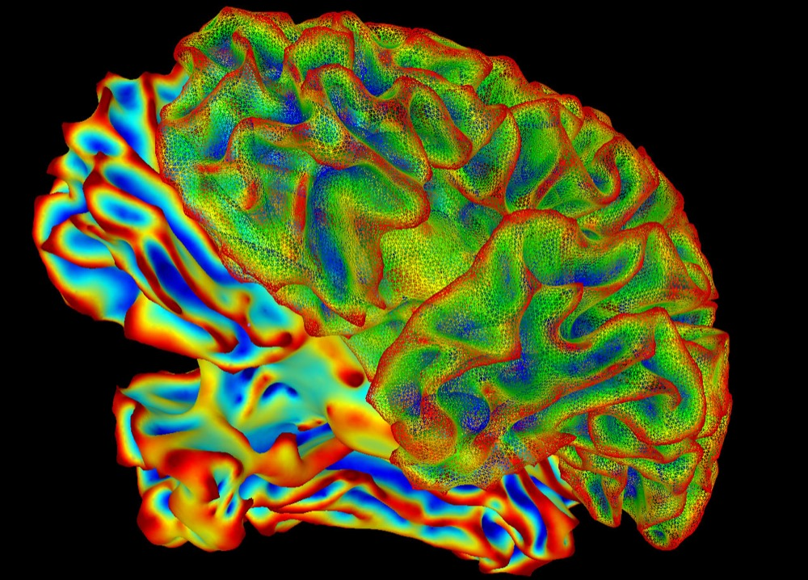

You use all of your brain.
The idea that 90 percent of it sits idle, waiting to be unlocked, is one of the most popular myths about the mind. It's also completely wrong, and where it came from is a story in itself.

You've heard this one. You only use 10 percent of your brain. The other 90 percent is untapped potential, dormant and waiting, and if you could just switch it on you'd remember everything, learn languages in a weekend, maybe bend a spoon. It shows up in ads for brain-training apps, in the mouths of self-help gurus, and in more than one Hollywood movie.
The 2014 film Lucy is the myth in its purest form. Scarlett Johansson's character unlocks the other 90 percent and walks away with perfect recall, then telekinesis, then powers that stop looking human at all. Limitless sells a gentler version of the same fantasy. Plenty of people leave those films half wondering whether the science is real.
It's a lovely idea. It's also one of the most thoroughly debunked claims in all of neuroscience. You already use every part of your brain, and the ways we know this are worth walking through, because each one tells you something real about how the brain works.
What using your brain actually looks like
Start with the obvious test. If most of the brain were switched off, we should be able to look and see the quiet parts. We can look. There are no quiet parts.
Modern imaging like fMRI and PET lets researchers watch which regions ramp up their activity during different tasks. No single task lights the whole brain at once, and it shouldn't, because different jobs live in different places. But across a normal day, as you move, see, remember, plan, feel, and talk, activity sweeps through essentially all of it. There's no large territory that stays dark no matter what you do. Even when you lie still and think about nothing, the brain runs an expensive background program of its own, a set of regions now called the default mode network, which quiets down only when you focus outward.
Zoom in further and the picture holds. Record from the brain with electrodes and every region shows activity. Look at the microscopic structure and you don't find a vast reserve of cells sitting unused. Neurons are metabolically expensive to keep alive, and a cell that does nothing tends to wither or get pruned. The brain doesn't carry 90 percent dead weight.
The argument that settles it
The single cleanest way to see that the myth is false has nothing to do with scanners. It's brain damage.
If nine tenths of your brain really were idle spare capacity, then damage to most of it should cost you nothing. A stroke in the unused majority would be a lucky miss. Losing a chunk of the silent reserve would leave you exactly as you were.
That's not remotely how it goes. There's almost no part of the brain you can damage without losing something, whether it is movement, vision, speech, memory, balance, recognition, or the ability to feel one side of your body. Neurologists spend their careers mapping which small injuries produce which specific deficits, and the map has little empty space. A pea-sized stroke in the wrong place can take your language or your ability to see faces. That's not what a mostly idle organ looks like. It's what an organ looks like when nearly all of it is doing something you need.
There's one fair objection worth meeting. Some brain damage really does stay quiet. Scans of healthy older people often turn up small old strokes they never noticed, and children who have an entire half of the brain removed to stop severe seizures can still grow up to walk, talk, and read. But quiet isn't the same as unused. These are cases where neighboring tissue and parallel circuits cover the gap, usually at a subtle cost that careful testing still finds. The brain has backup. It doesn't have a spare wing that does nothing.
The brain is far too expensive to waste
There's also an evolutionary argument, and it's a strong one. Your brain is about 2 percent of your body weight, but it burns something like 20 percent of your energy at rest. It's, gram for gram, one of the most costly pieces of tissue you own.
Evolution is relentless about cutting costs that don't pay for themselves. An organ that ran at 10 percent capacity, carrying a huge idle reserve that did nothing, would be an enormous metabolic liability. It would have been trimmed down long ago. The fact that we grow and feed this hungry organ in full is itself strong evidence that the whole thing earns its keep.
So where did 10 percent come from?
Nobody can point to a single origin, but the pieces are familiar. One thread runs back to the psychologist William James, who wrote in 1907 that we make use of only a small part of our possible mental and physical resources. Read him closely and he was talking about unused potential, about people not living up to what they could be. He never named a percentage and he never said anything about idle brain tissue. Somewhere along the way, popularizers hardened that hopeful thought into a specific and false claim that we physically use only 10 percent of the brain, and even pinned the number on James, who never gave it.
A second thread is a genuine old misunderstanding of brain cells. For much of the twentieth century people believed the brain was mostly glia, the supporting cells around neurons, with the neurons doing the real thinking as a small minority. If you squint, you can see how that turns into a story about a small working fraction and a large passive rest. But even that has since been overturned. Careful cell counts put the number of neurons and the number of non-neuron cells in the human brain at roughly one to one, not ten to one, and glia aren't passive packing material anyway. They're active partners in how the brain works.
Add a dash of celebrity misattribution. The line is often credited to Einstein, with no evidence he ever said it. Add a long history of people with something to sell, from mind readers to self-improvement courses, and you have a myth with everything it needs to survive. It flatters us, it promises a hidden upgrade, and it's simple enough to repeat.
The small piece of truth
Good myths usually wrap around a kernel of something real, and this one has two. Neither is what it claims, and they're worth keeping apart.
The first is that your brain doesn't use every neuron at once. At any single instant only a small fraction are actively firing. That's not a flaw, it's the design. If every neuron fired at once you wouldn't unlock anything, you'd get something close to a seizure. The brain runs on sparse, patterned activity, with different small groups active at different moments, which is part of how it stays both powerful and efficient. But notice the sleight of hand. “Not all at once” is a completely different statement from “90 percent never used.” Over any real stretch of time, all of it gets its turn.
The second kernel is stranger, and it's the honest heart of the matter. We can show that the whole brain is active, but we can't yet say what most of that activity is for. Only a few percent of the brain's energy goes to handling whatever task is in front of you. The great majority, something like two thirds or more, is spent on a constant inner activity that runs whether or not anything is happening around you, and nobody fully understands what all of it computes. So the mystery was never a dark unused continent. It's that so much of what the brain is always doing is real, costly, and still not fully mapped.
There's no idle nine tenths. The brain's constant, always-on hum is the part we understand least.
The takeaway
The honest version is less flattering than the myth but far more interesting. You're not carrying a dormant super-brain waiting for the right trick to switch it on. You're already running the whole thing, and it manages memory, movement, language, vision, and everything you think of as you, on roughly the power of a dim light bulb.
So no, Lucy wasn't onto anything. There's no locked wing of the mind to break into and no switch to throw. Getting sharper is real, but it comes from strengthening the brain you already run, not from waking a sleeping nine tenths. The wonder was never a locked-away 90 percent. It's how much of the brain's ceaseless, expensive activity we still can't account for.
For another everyday phrase that turns out to mean something stranger than people think, see why dopamine isn't the pleasure chemical.